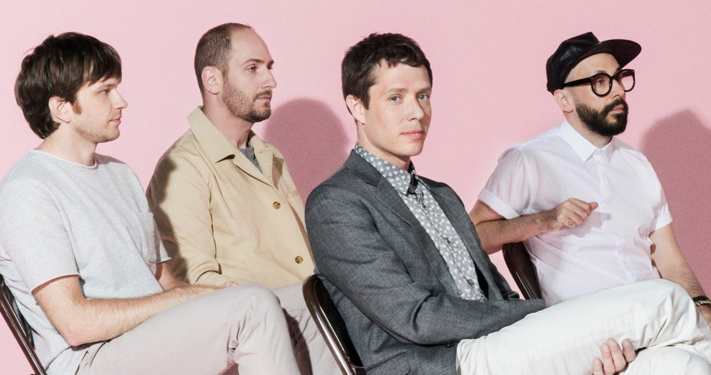

안녕하세요 한스입니다!
오늘은 창의적인 뮤비의 대명사 OK Go라는 밴드에 대해 소개하고, 그들이 어떻게 창의적인 뮤직 비디오와 함께 세계적으로 유명해졌는지에 대해 이야기 해드리려고합니다.

OK Go는 1998년에 미국 일리노이 주 시카고에서 결성된 록 밴드입니다. 이 밴드는 무엇보다도 독특하고 창의적인 뮤직 비디오로 유명합니다. 그들의 뮤직 비디오는 일종의 예술 작품으로 볼 수 있으며, 예술적인 창의성과 기술적인 진보를 결합해 보는 사람을 놀라게 합니다. 저희 아이도 좋아해서 여러번 돌려서 보더라구요. 이 밴드의 뮤직비디오는 대부분 원테이크로 제작되며, 다양한 색채, 독특한 카메라 앵글, 그리고 재미있는 요소들로 구성되어 있어서 음악뿐 아니라 영상에 흠뻑 빠지게 됩니다.
Here It Goes Again - OK Go
이들의 대표적인 뮤직 비디오 중 하나는 "Here It Goes Again"입니다.
이 비디오에서는 밴드 멤버들이 런닝 머신 위에서 춤을 추며 노래를 부르는 모습이 담겨 있습니다. 이 비디오는 2006년 MTV 비디오 뮤직 어워드에서 최우수 창작 비디오상을 수상했으며 OK Go를 세상에 널리 알린 뮤직비디오입니다, 유튜브에서도 6,000천만회 이상의 조회수를 기록하고 있습니다. 이 때부터 이 밴드가 공연보다 뮤비 찍는데 더 에너지를 쏟은 것 같습니다.
I Won't Let You Down - OK Go
일본에서 촬영한 "I Won't Let You Down" 뮤직 비디오도 재미있습니다.
"I Won't Let You Down"은 OK Go의 2014년 곡으로, 이 뮤직 비디오에서는 일본의 한 도시의 장소에서(아마도 창고나, 오픈전인 대형 마트로 보입니다.) 세그웨이를 타고 춤을 추며, 여러 여성들과 마스게임을 하는 듯한 모습을 드론이 원테이크 형식으로 촬영한 멋진 영상입니다. 이 뮤직 비디오는 특별한 기술과 장비를 사용해 만들어졌으며, 1,000명이 넘는 인원을 동원하여 꾸민 마지막 장면은 정말 압권입니다. 이 비디오는 OK Go의 창의성과 팀워크, 그리고 그들이 펼치는 음악적인 실력을 모두 담고 있으며, 많은 사람들에게 추천할 만한 비디오 중 하나입니다. 노래도 정말 흥겹고 춤이 절로 나옵니다.
Upside Down & Inside Out - OK Go
중력까지 거스르는 이 밴드!! 다음은 우주?
창의적인 상상력으로 가득했던 그들에게 이제 땅은 재미가 없었나봅니다. "Upside Down & Inside Out"은 OK Go의 2016년 곡으로, 이 뮤직 비디오에서는 그들이 우주 비행기 안에서 중력 없는 상태에서 춤을 추며, 다양한 물체와 동작을 통해 시각적인 효과를 연출합니다. 러시아 S7 항공사의 무중력 상태를 훈련하기 위해 운용하는 비행기를 이용하여, 무중력 상태에서 다양한 동작을 연출하며, 공중에서의 춤과 놀이를 담은 재미있고 신선한 영상을 제작해냈습니다.
Upside Down & Inside Out - OK Go 가사 Lyrics
Upside down and inside out
And you can feel it
Upside down and inside out
And you can feel it, feel it
Don't know where your eyes are
But they're not doin' what you said
Don't know where your mind is baby
But you're better off without it
Inside down and upside out
And you can feel it
Don't stop
Can't stop
It's like an airplane goin' down
I wish I had said the things you thought that I had said
Gravity's just a habit that you're really sure you can't break
So when you met the new you
Were you scared?
Were you cold?
Were you kind?
Yeah when you met the new you
Did someone die inside?
Don't stop
Can't stop
It's like a freight train
Don't stop
Can't stop
It's like an airplane goin' down
Don't know where your eyes are
But they're not doin' what you said
Don't know where your mind is baby
But you're better off without it
Looks like it's time to decide
Are you here?
Are you now?
Is this it?
All of those selves that you tried
Wasn't one of 'em good enough?
'Cause you're upside down and inside out
And you can feel it
Inside down and upside out
And you can feel it, feel it
Don't stop
Can't stop
It's like a freight train
Don't stop
Can't stop
Until you feel it goin' down
I wish I had said the things you thought that I had said
Gravity's just a habit that you're really sure you can't break
Upside down and inside out
And you can feel it
Don't stop
Can't stop
Until you feel it goin' down
Upside down and inside out
And you can feel it
Don't stop
Can't stop
Until you feel it goin' down
OK Go 소개
Home
OK Go is a band. They like to make stuff.
okgo.net
OK Go의 뮤직 비디오는 놀라운 상상력과 창의성으로 가득합니다. 그들은 언제나 새로운 시도와 색다른 시각으로 음악을 보여주면서, 많은 사람들의 눈길을 끌고 있죠. 이 뮤직 비디오들은 사람들이 이 밴드 음악에 대한 관심을 높이는 데 큰 역할을 해왔습니다. 오늘 소개해 드린 영상 외에도 "The One Moment" 나 종이 프린팅 이용한 "Obsession" 등 정말 놀랄만한 영상이 많이 있으니 더 찾아보시길 바랍니다.